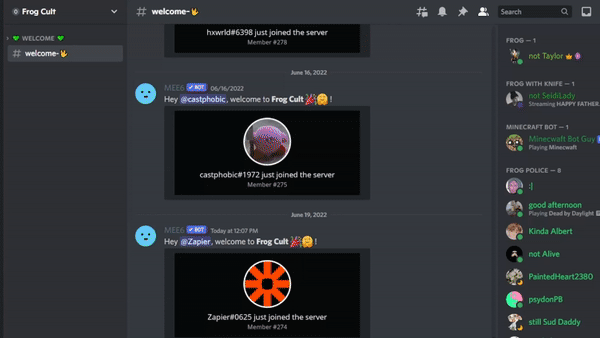
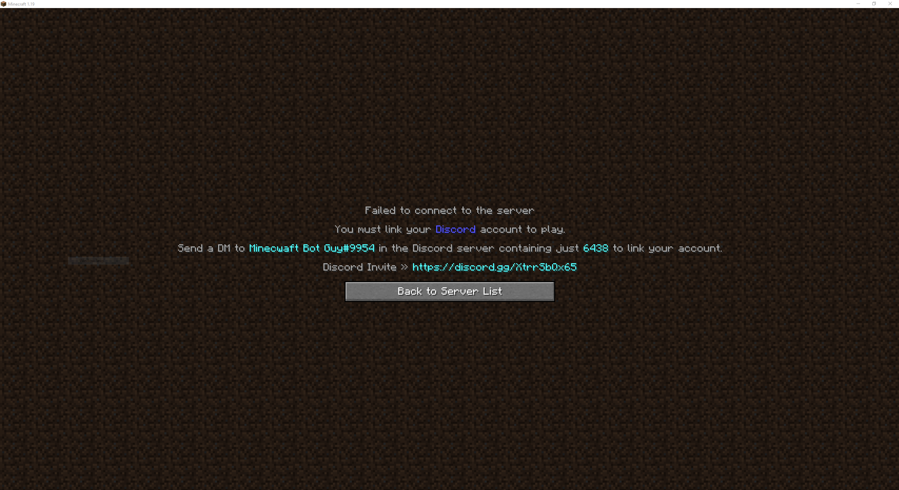
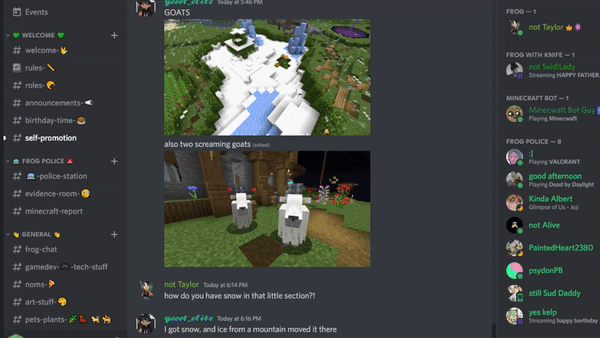
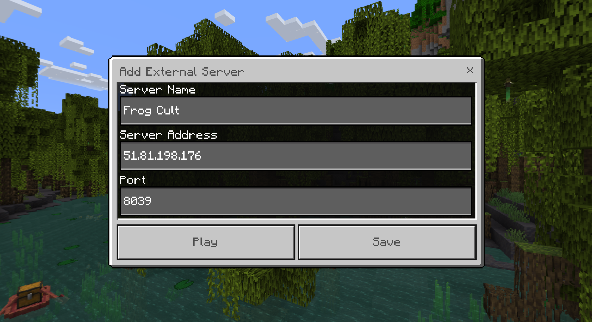
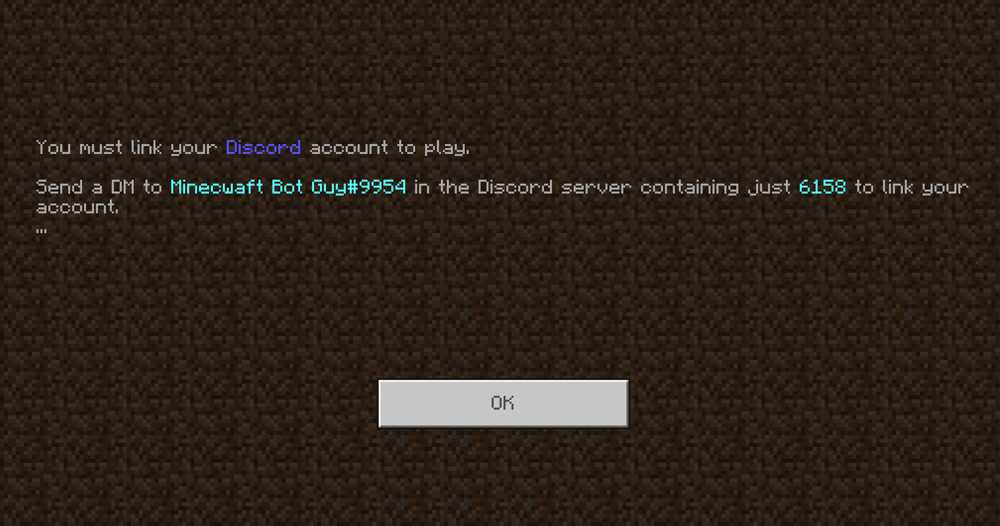

Server IP: mc.frogcult.net
Java Instructions:
1. Click here to join the Community Discord.
YOU MUST BE IN THE DISCORD TO PLAY ON THE SERVER
2. Once you join react to the server rules (See below)

You should now be able to see all the channels in the server.
3. Now head over to Minecraft Java Edition and add the
server
(See below)
Server IP: mc.frogcult.net

4. Click the server like you normally would to enter the
world.
There will be an error since your account is not linked but should be given a
code.
(See
below)

5. Copy the code and head back over to Discord.
6. Look on the right of the Discord server and see the
user
Minecraft Bot Guy (See below).
Right click Minecraft Bot Guy and click Message (Make sure you have DM's allowed in Discord)

7. Send the code you recieved in step 4. Minecraft Bot Guy should reply that your account is linked.
Now you are done and should be able to go back and enter the server!
Map
If you have an issue with someone/something in the server submit a report here:
Report System
Server IP: 51.81.198.176 Port: 8039
Bedrock Instructions:
Note the server is hosted as a Java server Bedrock may be unstable.
1. Click here to join the Community Discord.
YOU MUST BE IN THE DISCORD TO PLAY ON THE SERVER
2. Once you join react to the server rules (See below)
You should now be able to see all the channels in the server.
3. Now head over to Minecraft Bedrock Edition and add the
server
(See below)
* If you are adding a server on Xbox or Nintendo Switch check out this
article for how to add the server
Server Address: 51.81.198.176
Port: 8039

4. Click the server like you normally would to enter the
world.
There will be an error since your account is not linked but should be given a
code.
(See
below)

5. Copy the code and head back over to Discord.
6. Look on the right of the Discord server and see the
user
Minecraft Bot Guy (See below).
Right click Minecraft Bot Guy and click Message (Make sure you have DM's allowed in Discord)
7. Send the code you recieved in step 4. Minecraft Bot Guy should reply that your account is linked.
Now you are done and should be able to go back and enter the server!
Map
If you have an issue with someone/something in the server submit a report here:
Report System